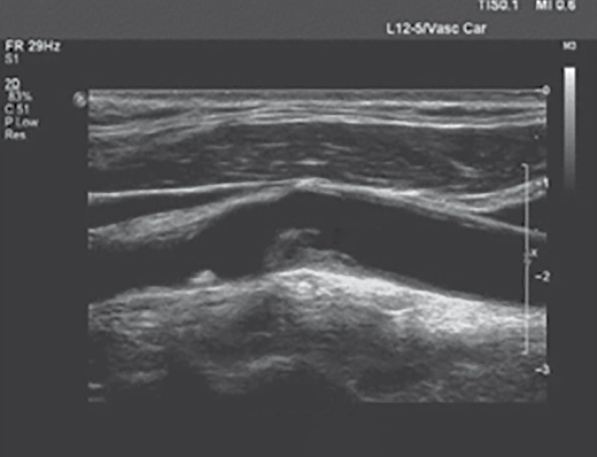
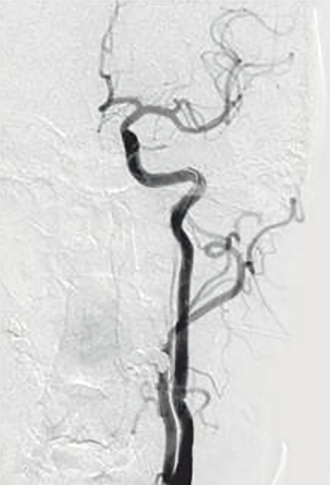
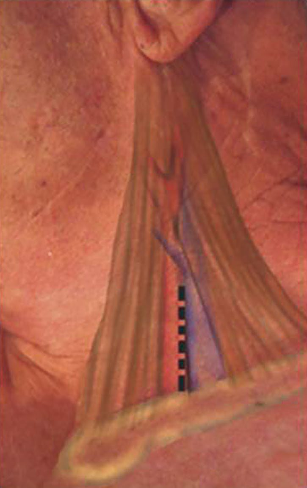

Carotid Artery Disease
Summary
- Carotid artery stenosis, predominantly atherosclerotic disease of the carotid bifurcation, is a major cause of transient ischaemic attack (TIA) and stroke, affecting an estimated 1.5% of individuals worldwide [1].
- Around 15% of the 150,000 cerebrovascular accidents (CVAs) occurring annually in the UK are due to atherosclerotic carotid disease [2].
- Diagnosis rests on history, carotid duplex ultrasound, and further imaging, while carotid endarterectomy (CEA) (supported by landmark randomised trials (NASCET, ECST, ACAS, ACST)) remains the mainstay of intervention for significant stenosis, with carotid stenting and transcarotid artery revascularisation (TCAR) reserved largely for high-risk patients [1][3].
There is no NICE guideline on carotid artery disease as such, the UK carotid pathway sits inside NICE NG128 on stroke and transient ischaemic attack, which contains four carotid recommendations in a single short subsection [4]. Everything upstream of them is the TIA pathway, and it is that pathway which determines whether a surgeon ever sees the patient.
- Two of the TIA recommendations are the ones a surgeon most needs. Refer immediately people who have had a suspected TIA for specialist assessment and investigation, to be seen within 24 hours of onset of symptoms [4], and offer aspirin 300 mg daily, unless contraindicated, started immediately [4].
- NICE then removes the risk score that used to govern that referral: do not use scoring systems, such as ABCD2, to assess risk of subsequent stroke or to inform urgency of referral for suspected or confirmed TIA [4].
- Every suspected TIA is a 24-hour referral, whatever the score would have said.
Imaging before the carotid duplex is also restricted. Do not offer CT brain scanning to people with a suspected TIA unless there is clinical suspicion of an alternative diagnosis that CT could detect; after specialist assessment in the TIA clinic, consider MRI with diffusion-weighted and blood-sensitive sequences, performed on the same day as the assessment if it is done at all [4]. Carotid imaging itself is gated on the surgical question: everyone with TIA who after specialist assessment is considered a candidate for carotid endarterectomy should have urgent carotid imaging [4].
Definition
- A cerebrovascular accident (CVA), or stroke, is a rapidly developing neurological deficit caused by ischaemia with infarction; a TIA is an acute episode of focal (cerebral or visual) neurological deficit caused by ischaemia without infarction [2].
- Symptoms resolving within 24 hours are historically categorised as TIA, whereas those persisting beyond this interval are consistent with stroke, though the 24-hour cut-off is now considered somewhat arbitrary [1][5].
- Symptomatic carotid stenosis is defined as a patient who has experienced amaurosis fugax, cortical TIA, or stroke within the 6 months before presentation, attributable to an ipsilateral carotid lesion [1].
Pathophysiology
- Evidence of early atherosclerotic arterial disease can be detected from the third decade of life; damage to the arterial intima by free radicals or lipoproteins leads to fatty streak formation, the precursor of arterial plaque [1].
- Areas subject to turbulent blood flow, such as the carotid bifurcation, are particularly prone to plaque formation, which can progress to luminal encroachment, stenosis or occlusion, and serve as a nidus for thrombus formation with risk of thromboembolic TIA or stroke [1].
- CVA/TIA arises from disease at the origin of the internal carotid artery (ICA) due to platelet or atheromatous embolisation from the plaque surface, usually following plaque rupture [2].
- TIAs in general are caused by distal embolisation of platelet thrombi forming on an atheromatous plaque into the cerebral circulation, and represent a warning of impending major stroke [6].
- Amaurosis fugax results from a minute thrombus from an atheromatous carotid plaque passing into the central retinal artery, causing transient monocular blindness; lasting obstruction causes permanent blindness [6][7].
Plaque at the bifurcation in Schwartz's account
About 700,000 Americans have a new or recurrent stroke each year, 85% ischaemic and 15% haemorrhagic, ischaemic strokes arising from cardiogenic emboli (35%), carotid disease (30%), lacunar infarction (10%), miscellaneous (10%) and idiopathic causes (15%), with carotid bifurcation atheroma implicated in 30–60% overall; the bifurcation is a region of low velocity and low shear where flow separates into the low-resistance internal and high-resistance external carotid, so plaque forms on the outer wall opposite the flow divider (where transient flow reversal occurs in each cardiac cycle) through intimal injury, platelet deposition, smooth muscle proliferation and fibroplasia, turbulence and atheroembolism rising with stenosis graded mild (<50%), moderate (50–69%) and severe (70–99%) [8].
Clinical features
- TIAs are short-lived mini-strokes, often recurrent, causing unilateral motor or sensory loss in the arm, leg or face, transient blindness (amaurosis fugax), or speech impairment (dysphasia) [6].
- Amaurosis fugax is described as a curtain or grey veil coming down across the visual field, lasting seconds to minutes, caused by central retinal artery involvement; internal capsular stroke produces dense hemiplegia including the face (striate branches of the middle cerebral artery), and hemianopia is loss of vision in one half of the visual field [2].
- Clinical variants include stroke in evolution (progressive deficit over hours/days), completed stroke (stable end-result lasting over 24 hours), and crescendo TIA (rapidly recurring TIA of increasing frequency, suggesting an unstable plaque with ongoing platelet aggregation) [2].
- Carotid bruits are detectable in over 10% of patients aged >60 but correlate poorly with degree of stenosis or CVA risk, may not arise from the ICA, and patients with significant stenosis may have no audible bruit at all (a "false-negative bruit"), while a bruit can also arise from a stenotic external carotid artery ("false-positive bruit") [1][2].
- Eighty per cent of TIAs are in the carotid territory [2].
- Other causes of transient monocular blindness include multiple sclerosis, acute glaucoma, retinal tears, and temporal arteritis [5].
- Hollenhorst plaques (cholesterol emboli) may be seen on ophthalmoscopic examination in amaurosis fugax from ICA/ophthalmic branch occlusion [7].
Syndromes of cerebral ischaemia in Schwartz's detail
- Schwartz distinguishes TIA (focal deficit under 24 hours, most resolving within minutes), crescendo TIAs (daily events or multiple resolving attacks within 24 hours with full recovery between), haemodynamic TIAs (provoked by exertion, meals or a hot bath, implying severe extracranial disease with poor collaterals), reversible ischaemic neurological deficit (over 24 hours but resolving within 3 weeks), completed stroke (beyond 3 weeks) and stroke in evolution (linear or stepwise worsening over 24 hours); 15% of strokes are preceded by a TIA, the 90-day stroke risk after TIA is 3–17%, and TIA prevalence rises from 2.7% to 3.6% in men and 1.4% to 4.1% in women between 65–69 and 75–79 [8].
- Amaurosis fugax, a shutter or grey shade lasting minutes, over 90% embolic to the retinal artery or its divisions, migrainous if it evolves over 20 minutes, and Hollenhorst cholesterol plaques seen by an optician are the ocular signs, with retinal or optic nerve ischaemia, ocular ischaemic syndrome and cortical field defects; motor and sensory deficits are abrupt, without seizures or paraesthesia, a combined motor–sensory deficit in one territory suggesting cortical thromboembolism whereas pure motor, pure sensory or single-limb deficits sparing the face suggest lacunar infarction; dominant-hemisphere emboli cause dysphasia and non-dominant emboli visuospatial neglect [8].
- Carotid dissection causes about 20% of strokes under 45, with unilateral neck pain, headache and ipsilateral Horner's syndrome in up to 50%, then cerebral or ocular ischaemia and cranial nerve palsies; kinks and coils cause hypoperfusion symptoms provoked by head rotation, flexion or extension, more often in women; carotid aneurysms present as a pulsatile neck mass and embolise rather than thrombose or rupture; carotid body tumours present in the fifth to seventh decades as an asymptomatic lateral neck mass that widens the bifurcation [8].
Etiology
- Risk factors predisposing to carotid artery stenosis are those associated with atherogenesis generally: smoking, hypertension, dyslipidaemia and diabetes [1].
- Approximately 100,000 carotid interventions are performed annually in the United States [1].
- Stroke is the third commonest cause of death in the UK after coronary heart disease and cancer, with incidence of stroke 200 per 100,000 and TIA 35 per 100,000 [2].
- Common causes of ischaemic stroke are cardiogenic emboli (35%), carotid artery stenosis (30%), lacunar infarcts (10%), miscellaneous (10%), and idiopathic (15%); 85% of all strokes are ischaemic and 15% haemorrhagic [9].
- A prior history of TIA or stroke is an important predictor of recurrent ipsilateral stroke, and the severity of carotid stenosis is a strong predictor of stroke risk [9].
- Non-atherosclerotic causes of carotid disease include fibromuscular dysplasia, carotid dissection, and carotid aneurysm [1].
Diagnosis
- Diagnosis combines clinical history and physical examination with imaging; a thorough history should include atrial fibrillation and other predisposing conditions [1].
- Colour duplex scan is indicated for all patients with TIA/CVA within the last 6 months, and is a fast, cost-effective, first-line modality [1][2].
- On carotid duplex, ICA stenosis is graded by peak systolic velocity (PSV) and ICA/CCA PSV ratio: normal <125 cm/s; <50% stenosis <125 cm/s; 50–69% stenosis 125–230 cm/s (ratio 2–4); >70% stenosis >230 cm/s (ratio >4, end-diastolic velocity >100 cm/s) [1].
- Percentage stenosis can be measured by the ECST method (estimated original diameter minus narrowest ICA diameter, divided by estimated original diameter) or the NASCET method (normal distal cervical ICA minus narrowest ICA diameter, divided by distal ICA diameter) [1].
- MRA or CTA is used when duplex is inconclusive or difficult owing to calcified vessels [2].
- CTA additionally images the aortic arch, tortuosity, aberrant anatomy, lesion length/extent, tandem lesions, and the circle of Willis (important for planning a shunt or flow reversal), but has limitations from contrast exposure, radiation, and reduced reliability distinguishing moderate from severe stenosis [1].



Duplex criteria and imaging in Schwartz's account
- The external carotid has a high-resistance waveform with sharp systolic peak and little diastolic flow, the internal a low-resistance waveform with broad peak and high diastolic flow, and the common carotid resembles the internal since 80% of flow goes there; peak systolic velocity rises at the stenosis and end-diastolic velocity with its severity, colour mosaics mark post-stenotic turbulence, waveforms dampen distal to severe stenosis, contralateral occlusion falsely raises ipsilateral velocities and ipsilateral occlusion makes the common carotid waveform high-resistance [8].
- The University of Washington criteria define 50–79% stenosis by PSV above 125 cm/s with spectral broadening and 80–99% by PSV above 125 with end-diastolic velocity above 140 cm/s, an ICA/CCA ratio above 4 predicting 70–99% angiographic stenosis; the consensus table grades under 50% as PSV below 125, ratio below 2 and EDV below 40, 50–69% as PSV 125–230, ratio 2–4 and EDV 40–100, and 70% to near-occlusion as PSV above 230, ratio above 4 and EDV above 100 with visible plaque, near-occlusion having variable velocities and occlusion no detectable flow [8].
- MRA (phase-contrast or time-of-flight, contrast-enhanced 3D) avoids iodinated contrast, diffusion-weighted MRI separates infarct, penumbra and chronic change, CT remains the fastest way to exclude haemorrhage in acute stroke, multidetector CTA offers faster acquisition and better spatial resolution than MRA though its stenosis grading awaits validation, and digital subtraction angiography, the historical gold standard, with about 1% stroke risk from arch manipulation plus haematoma, pseudoaneurysm, embolisation and thrombosis at the access site, is now reserved for suspected intracranial disease and planned stenting, CTA or MRA mapping arch anatomy and collaterals beforehand [8].
- FMD is suspected when velocity rises across a stenosis without atheroma, angiography, CTA or MRA showing a "string of beads"; kinks and coils are usually incidental on duplex, where angle uncertainty confounds velocities, so angiography in flexion, extension and rotation judges significance; dissection is now diagnosed non-invasively by duplex, MRI/MRA or CTA and typically starts in the internal carotid beyond the bulb; carotid body tumours are localised by duplex and delineated by CT or MRI, arteriography being reserved for assessing invasion and preoperative feeder embolisation; carotid trauma is screened by duplex and spiral CTA with angiography confirming [8].
Scoring and Severity
- Landmark trials define the stenosis thresholds for intervention.
- NASCET demonstrated that symptomatic patients with ≥70% stenosis have a 9% risk of stroke at 2 years compared with 26% on medical therapy alone; for symptomatic patients with <50% stenosis, CEA did not reduce future neurologic events compared with medical therapy in either NASCET or ECST [1].
- Combining ECST and NASCET results, CVA in the first year following CEA fell from 18% with best medical therapy to 3–5% with surgery plus best medical therapy [2].
- For asymptomatic disease, ACAS and ACST trials found combined stroke and death at 5 years was 4.1% with CEA for ≥60% stenosis versus 10% with medical therapy alone [1].
- Risk of stroke following a TIA is approximately 18% in the first year, 10% in the first 90 days, and 4% in the first 24 hours [2].
- High-surgical-risk criteria for CEA (favouring stenting) include anatomical factors, high carotid bifurcation above C2, low common carotid artery below the clavicle, contralateral carotid occlusion, restenosis after prior CEA, previous neck irradiation, prior radical neck dissection, contralateral laryngeal nerve palsy, tracheostomy (and physiological factors) age ≥80 years, LVEF <30%, NYHA class III/IV heart failure, unstable (CCS class III/IV) angina, recent MI, clinically significant cardiac disease, severe COPD, and end-stage renal disease on dialysis [9].
NG128 gives the operative threshold in both measurement systems, and requires the report to say which was used, that last requirement is the one most often forgotten. For people with stable neurological symptoms from acute non-disabling stroke or TIA [4]:
| Degree of symptomatic stenosis | Action |
|---|---|
| 50% to 99% by NASCET, or 70% to 99% by ECST | Assess and refer urgently for carotid endarterectomy to a service following current national standards, and give best medical treatment |
| Less than 50% by NASCET, or less than 70% by ECST | Do not have surgery; give best medical treatment |
Table reformats the NG128 carotid endarterectomy thresholds [4]. Best medical treatment is defined in both recommendations as control of blood pressure, antiplatelet agents, cholesterol lowering through diet and drugs, and lifestyle advice [4].
Because the two trials measured the same lesion differently, NASCET against the distal internal carotid diameter, ECST against the estimated carotid bulb, the same artery yields a substantially higher figure by ECST than by NASCET, and a percentage quoted without its system is uninterpretable. Hence the fourth recommendation: ensure that carotid imaging reports clearly state which criteria, ECST or NASCET, were used when measuring the extent of carotid stenosis [4].
Note what NG128 does not contain: no recommendation on carotid stenting versus endarterectomy, no threshold for asymptomatic stenosis, and no stated time window in days from the index event, the urgency is carried by "refer urgently" and by the 24-hour TIA assessment rule upstream [4].
Trial evidence and the high-risk patient in Schwartz's account
- Recurrent ipsilateral stroke risk with severe symptomatic stenosis approaches 40%; NASCET cut 2-year ipsilateral stroke from 26% to 9% for 70–99% stenosis and 5-year stroke from 22% to 16% for 50–69%, with no benefit below 50%, and ECST agreed; endarterectomy within 4 weeks of stroke now has acceptable complication rates whereas early series operating at 5–6 weeks saw haemorrhagic conversion from poor selection, and stenting within 2 weeks of stroke carries higher mortality than later [8].
- In asymptomatic bruits followed by duplex the annual symptom rate was 4%, progression to over 50% stenosis 8% a year, and progression beyond 80% predicted occlusion or symptoms, driven by smoking, diabetes and age; ACAS found 5-year ipsilateral stroke of 5.1% after surgery against 11% medically for over 60% stenosis (53% relative reduction) and ACST confirmed benefit for over 70% stenosis even against statins and clopidogrel, so severe (80–99%) asymptomatic stenosis clearly warrants revascularisation while 60–79% remains debated [8].
- Since FDA approval of stenting in 2004 the question is stenting versus surgery: a Cochrane review of five trials (1269 patients before 2006) found more periprocedural stroke and death with stenting (OR 1.33) and more restenosis; CREST found no difference in the composite of death, stroke, infarction and 4-year ipsilateral stroke (5.2% vs 4.5%) but more 30-day stroke with stenting (4.1% vs 2.3%) and more infarction with surgery (2.3% vs 1.1%); ICSS in symptomatic patients found stroke, death and infarction of 8.5% with stenting against 5.2% with surgery and more new diffusion-weighted lesions after stenting [8].
- The Society for Vascular Surgery therefore recommends endarterectomy first-line for symptomatic 50–99% and asymptomatic 60–99% stenosis with perioperative stroke and death under 3% in the asymptomatic, stenting only for symptomatic 50–99% stenosis at high surgical risk, no stenting for the asymptomatic, and medical therapy first for asymptomatic patients at high risk or with under 3 years' life expectancy; high surgical risk is anatomical (bifurcation above C2, common carotid below the clavicle, contralateral occlusion, restenosis after prior endarterectomy, neck irradiation, radical neck dissection, contralateral laryngeal palsy, tracheostomy) or physiological (age ≥80, ejection fraction ≤30%, NYHA III–IV failure, CCS III–IV or unstable angina, recent infarction, significant cardiac disease, severe COPD, dialysis) [8].
- Stenting is avoided for extensive calcification, polypoid or globular lesions, severe common carotid tortuosity, stenoses over 2 cm, occlusion, intraluminal thrombus and extensive middle cerebral atheroma [8].
- Shamblin grades carotid body tumours I (under 5 cm, free of vessels), II (intimately involved but not encasing) and III (intramural, encasing vessels and nerves); 5–7% are malignant, about 35% hereditary, and malignancy risk is highest in young familial cases [8].
Treatment and Management
- Best medical therapy comprises an antiplatelet agent (aspirin, dipyridamole, or clopidogrel), smoking cessation, optimisation of blood pressure and diabetes control, and a statin irrespective of baseline cholesterol [2][7].
- CEA is offered to symptomatic patients with ≥70% (or ≥50% in select high-risk patients) ICA stenosis, and asymptomatic patients with ≥70% (or >60%) stenosis; symptomatic patients with <50% stenosis are treated medically (Plavix, aspirin, statin, risk-factor optimisation) rather than surgically [2][7].
- Urgent CEA within 2 weeks is now considered for all patients presenting with acute TIA/CVA [2].
- Timing of CEA after stroke follows: 2 weeks after a small non-haemorrhagic stroke, 3 weeks after a large non-haemorrhagic stroke, and 6–8 weeks after a haemorrhagic stroke; emergent CEA may benefit fluctuating neurological symptoms or crescendo/evolving TIAs [7].
- With bilateral disease, the tightest side is repaired first; if equally tight bilaterally, the dominant side is repaired first [7].
- An occluded ICA should not be repaired, as there is no benefit and repair can exacerbate injury with bleeding; heparin or clopidogrel is used to prevent clot propagation acutely [7].
- Carotid artery stenting is reserved for high-risk patients (e.g., prior CEA, severe cardiac comorbidity, previous neck irradiation or dissection); TCAR uses a distal carotid-to-femoral shunt to redirect flow and embolic debris away from the brain and carries a lower stroke rate than transfemoral stenting [7].
Medical therapy and non-atherosclerotic disease in Schwartz's account
Most stroke neurologists give aspirin plus clopidogrel after TIA or stroke, aspirin alone having proven to reduce recurrence in large trials; FMD (women in their forties and fifties, medium-sized long unbranched arteries, bilateral, vertebral involvement in 20%, intracranial saccular aneurysm in up to 50%, medial fibroplasia the commonest of four types with medial hyperplasia, intimal fibroplasia in 5% and perimedial dysplasia, presenting with TIA from platelet emboli in about 40%) is treated with antiplatelets when asymptomatic and endovascularly for lateralising symptoms, surgery rarely; carotid dissection (medial haemorrhage extending subadventitially towards aneurysm or subintimally towards thrombosis; spontaneous, after hyperextension, manipulation, strangulation or penetrating injury, with Ehlers–Danlos, Marfan's, α1-antitrypsin deficiency or FMD, or iatrogenic) is treated medically with heparin–warfarin or antiplatelets without randomised proof, has a good prognosis and low recurrence extracranially, and is stented, coiled or covered only for recurrent events or medical failure; carotid aneurysms (under 1% of carotid operations, atherosclerotic or medial degeneration at the bulb, bilateral in 12%; pseudoaneurysms from trauma, infection (once syphilis, now staphylococcal peritonsillar abscess) FMD or dissection) are increasingly treated endovascularly; carotid body tumours are resected, arteriography and feeder embolisation reducing blood loss; traumatic thrombosis is anticoagulated if asymptomatic and revascularised for ongoing ischaemia, traumatic dissection (distal cervical and petrous segments) managed medically, and unreachable pseudoaneurysms coiled or covered with stents while bare stents have treated traumatic dissection [8].
Surgeries
- CEA involves clamping the carotid vessels, an arteriotomy in the common carotid artery extended into the internal carotid artery through the diseased segment, removal of the occlusive plaque (endarterectomy, removing the intima and part of the media), and closure, often with a patch; eversion endarterectomy may avoid the need for a patch [2][6][7].
- The incision is anterior to sternocleidomastoid; a temporary shunt (e.g., Pruitt or Javid) may be used to maintain cerebral perfusion during clamping, guided by awake neurological assessment, stump pressure (<50 mmHg indicates need for shunt), or transcranial Doppler monitoring of middle cerebral artery flow, routinely used in about 10% of awake patients [2][7].
- The most important technical concern is achieving a good distal endpoint of the endarterectomy [7].
- The facial vein, a branch of the internal jugular vein overlying the carotid bifurcation, can be routinely divided safely for exposure [7].
- For patients under general anaesthesia, focal ipsilateral EEG amplitude decrease/slowing, or a fall to <50% of baseline middle cerebral artery velocity on transcranial Doppler, indicates cerebral ischaemia warranting shunt placement [9].



Endarterectomy and stenting technique in Schwartz's detail
- Anaesthesia is general, local or regional by preference; an awake patient's response to commands during clamping tests collateral flow, while under general anaesthesia EEG (focal amplitude loss and slowing) or transcranial Doppler (middle cerebral velocity below 50% of baseline) or stump pressure decide on shunting, and some surgeons shunt routinely without monitoring [8].
- The neck is extended and turned away with a roll between the shoulder blades, an oblique incision along the anterior sternocleidomastoid border is centred on the bifurcation, platysma and anterior jugular tributaries are divided, the superior belly of omohyoid may be divided, the carotid sheath opened and the common carotid followed to the bifurcation, where carotid body stimulation causes bradycardia blunted by 1% lidocaine into the body or reversed by atropine; the common facial vein is the landmark, the hypoglossal nerve usually crossing just behind it, an external carotid branch to sternocleidomastoid may be divided to mobilise the internal carotid, and the posterior belly of digastric is divided for a high bifurcation; heparin 1 mg/kg precedes clamping, the internal carotid is clamped first with a soft clamp to prevent embolisation, then external and common, a longitudinal arteriotomy runs from the distal common carotid through the bulb past the plaque into normal internal carotid, a shunt is inserted if needed, the plaque is elevated in a plane within the wall and removed, the distal transition must be smooth with tacking sutures for any flap, the external carotid origin is cleared by eversion, debris irrigated away, and the arteriotomy closed with a saphenous, polyester, PTFE or biological patch (agreed as indicated for vessels under 7 mm though universal patching is debated) or primarily; eversion endarterectomy transects the internal carotid at the bulb, everts it and peels the plaque, avoiding a patch and exposing the distal endpoint, with no proven superiority; vessels are flushed before completion, flow is restored to the external carotid first then the internal, protamine reverses heparin, and neurological status is checked before leaving theatre, most patients going home within 24 hours [8].
- For stenting clopidogrel starts 3 days before; through a 5–6F femoral sheath an arch aortogram and selective 5F carotid injection are obtained, contralateral, vertebrobasilar and intracranial circulations assessed, a 0.035-inch 260 cm stiff wire parked in the external carotid, bivalirudin given (0.75 mg/kg bolus then 2.5 mg/kg/h), a 90 cm 6F guiding sheath advanced into the common carotid never beyond the plaque, a distal embolic protection device (balloon occlusion such as PercuSurge, filters such as Angioguard, Accunet, Emboshield, FilterWire or SpiderRx with pores under 100 µm, or Parodi flow reversal) deployed beyond the lesion, predilatation with a 4 mm balloon if needed, a rapid-exchange 0.014-inch stent (Acculink, Exact, NexStent, Protégé, Precise, Exponent; open or closed cell, sized to the common carotid) deployed and post-dilated with a balloon of 5.5 mm or less (bulb dilatation causing glossopharyngeal-mediated bradycardia) the device retrieved, the puncture closed, bivalirudin stopped and clopidogrel 75 mg continued a month with aspirin indefinitely [8].
Complications
- Cranial nerve injury is the characteristic complication of CEA: vagus nerve injury (from vascular clamping) is the most common, causing hoarseness via the recurrent laryngeal nerve; hypoglossal nerve injury causes tongue deviation toward the injured side with speech/mastication difficulty; glossopharyngeal nerve injury (rare, with high carotid dissection) causes dysphagia; ansa cervicalis injury causes no serious deficit; and marginal mandibular branch of the facial nerve injury (from a jaw-angle retractor) affects the corner of the mouth [7].
- Postoperative facial/neck numbness and hypoglossal or glossopharyngeal nerve damage (with dysphagia or tongue weakness) are also described [2].
- Death or major disabling stroke occurs in 1–2% of CEA, minor stroke with recovery in 3–6%; myocardial infarction is the most common cause of non-stroke morbidity and mortality after CEA [2][7].
- An acute neurological event immediately after CEA requires urgent return to theatre to check for an intimal flap or thrombosis, using intraoperative ultrasound [7].
- Post-CEA pseudoaneurysm presents as a pulsatile, bleeding mass and requires draping/prepping before intubation followed by repair [7].
- Around 20% of patients develop hypertension after CEA due to injury to the carotid body/baroreceptor, treated with sodium nitroprusside to avoid bleeding [7].
- Restenosis after CEA occurs in about 15% of patients [7].
- Wound haematoma is a recognised complication [2].
Complications of endarterectomy and stenting in Schwartz's account
Intraoperative stroke follows plaque embolisation or prolonged clamp ischaemia, postoperative stroke most often embolisation and less often thrombosis from the arteriotomy closure, an intimal flap or distal dissection, so new deficits prompt immediate duplex, mandatory re-exploration for occlusion and angiography if intracranial revascularisation is contemplated; an expanding neck haematoma threatens the airway and is evacuated at once, securing the airway being extremely difficult; cranial nerve palsies occur in 1–30% (marginal mandibular, vagus, hypoglossal, superior and recurrent laryngeal), mostly traction injuries [8]. Stenting embolises far more on transcranial Doppler than surgery even with protection, though most emboli are asymptomatic; acute stent thrombosis is rare, in-stent restenosis is estimated at 10–30% with in-stent PSV above 300–400 cm/s suggesting over 70–80% restenosis, bradycardia and hypotension occur in up to 20% and respond to atropine, and dissection and access complications (haematoma, pseudoaneurysm, embolisation, femoral thrombosis) are infrequent [8].
Prognosis
- The risk of stroke following a TIA is approximately 18% in the first year, 10% within 90 days, and 4% within the first 24 hours, underscoring the urgency of assessment [2].
- CEA combined with best medical therapy reduces first-year CVA risk from 18% (medical therapy alone) to 3–5% in symptomatic patients with significant stenosis [2].
- In asymptomatic patients with ≥60% stenosis, 5-year combined stroke and death is 4.1% with CEA versus 10% with medical therapy alone [1].
- Untreated symptomatic stenosis ≥70% carries a 26% 2-year stroke risk versus 9% with CEA [1].
- A prior history of TIA or stroke is a key predictor of recurrent ipsilateral stroke [9].
References
- Sabiston Textbook of Surgery, 22nd ed., Ch. 101 Contemporary Management of Carotid Disease
- Oxford Handbook of Clinical Surgery, 5th ed., Ch. 19 Peripheral vascular disease, Carotid disease
- The ABSITE Review, 2022, Carotid endarterectomy
- NICE Guideline NG128: Stroke and transient ischaemic attack in over 16s — diagnosis and initial management (2019, last updated April 2023), 1.1.4; 1.1.5; 1.1.6; 1.2.1; 1.2.2; 1.2.3; 1.2.3 to 1.2.6; 1.2.4; 1.2.5; 1.2.6 www.nice.org.uk
- Browse's Introduction to the Symptoms and Signs of Surgical Disease, 6th ed., Ch. 10 The arteries, veins and lymphatics, Transient ischaemic attacks
- Bailey & Love's Short Practice of Surgery, 28th ed., Ch. 61 Arterial disorders
- The ABSITE Review, 2022, carotid section
- Schwartz's Principles of Surgery, 11th ed., Ch. 23, Arterial Disease, Figs. 23-13 and 23-14
- Schwartz's Principles of Surgery: ABSITE and Board Review, Ch. 23 Arterial Disease